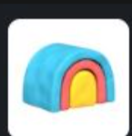

Harry Stebbings · 2nd
Founder @ 20VC
1w
OpenRouter is one of the most insane stories in tech. Co-founded by OpenSea founder, Alex Atallah. It has become o…more
341
54 Comments
Content studio built for B2B tech companies where
the pace is high and the standard has to hold.
Founders Seen In
Case Studies
Landed a Response From ClickUp With just a single LinkedIn post, they were able to get a response from the decision team. We documented the process.
BoostedChat
20K+ Impressions From Pilot Turned founder insights and domain expertise into high-volume content across multiple platforms.
5 Inbound Calls Booked Within 60 days, consistent distribution resulted in a steady stream of qualified inbound interest.
Crestio
Process
The production quality behind every post we publish, built to stop the scroll before your founder’s name ever shows up.
Harry Stebbings · 2nd
Founder @ 20VC
1w
OpenRouter is one of the most insane stories in tech. Co-founded by OpenSea founder, Alex Atallah. It has become o…more
ClickUp
The world’s first Company Brain just dropped. Meet Brain² 👇
🧠 Every model, one price: Brain² picks the best AI for the job, with full…more
Guillaume Moubeche · 2nd
Founder @ lemlist (0 to $150m valuation in 4 ye…)
1mo
I’ve invested millions of dollars in 30+ startups. I’ve also grown a bootstrapped business to $50M+ in ARR and $…more

Clay
Quality of life update: Enrichment in Audiences now runs on top of Clay Workflows….more
Tyler Denk · 2nd
cofounder/ceo @ beehiiv
1mo
The people confidently saying “AI will replace engineers” have clearly never shipped software to real users.
Rippling
Every week, we’re dropping new Rippling AI prompts to help you do better work ⚡
These 5 are used by real HR, IT, and Finance leaders to tackle everything from turnover analysis and headcount planning to checking recruiting pipeline updates in Slack….more
We don’t see our craft as addition or subtraction. It’s simpler than that. We extract your company’s intellectual capital (IC) and convert it into content.
Every business has it, built into the way your team thinks, sells, and solves problems for customers.
Whoever holds that understanding walks us through it. A voice note, a call, whatever works.
We turn that into content that meets industry-standard quality. Produced to perform, represent, and attract.
Once the content is produced, we don’t hand it back and walk away. We manage where it goes and how far it reaches.
It goes out on a schedule built around your audience, modeled to get seen by the people who matter.
If you’ve already said it somewhere, a podcast, a webinar, a recorded call, we turn it into content and distribute it instead of letting it go to waste.
Nothing here runs on guesswork, since we don’t repeat the same approach every month.
Every post we publish feeds back in. What actually landed shapes next month’s production, so the system gets sharper instead of repeating itself.
Solutions
The cumulative effect of consistent production and distribution over 90 days.
Illustrative. Individual results vary by market, offer, and consistency.
Illustrative. Individual results vary by market, offer, and consistency.
Illustrative. Individual results vary by market, offer, and consistency.
The content and engagement data gives your teams richer signals and better inputs to work with across sales, marketing, and beyond.
Objections, customer language, deal context, and competitor comparisons.
Campaigns, paid creative, newsletters, and organic distribution.
Pain points, desired outcomes, recurring questions, and buying behavior.
Engagement, inbound, conversations, and performance signals.
A customer’s likelihood of staying long-term is tied to how closely they remain connected to the company’s progress, thinking, and evolution.
Still engaged, but drifting.
Drag the slider. Each square is a customer already using the product.
Illustrative model, not a guarantee. Actual retention depends on product depth, distribution consistency, and customer fit.
Customer discovery is the immediate benefit. Over time, each piece also broadens the ways talent, investors, partners, and even acquirers can come across the company.
Pricing
Different stages require different levels of production, infrastructure, and support.
Package Includes
Package Includes
Testimonial
Hear from their experience.
“Before Claviro, my LinkedIn presence was whatever I managed to post at midnight before a launch. Ten months in, three closed deals started as a comment on one of our posts, and my sales team sends prospects to my profile before they ever see a deck.”
Priya Raman
Founder & CEO, Northbound Analytics
“We'd tried two other agencies before this, and both wanted us to sound like everyone else in the industry. Claviro sat down with our own engineers, pulled out opinions we'd never bothered writing down, and turned it into a posting schedule I don't have to think about anymore.”
Marcus Webb
VP of Marketing, Fielder Robotics
“I used to dread opening LinkedIn. Now a draft lands every week that already sounds like me, and last quarter a partnership lead came in off a comment on one of them. I never expected 'content' to actually do that for us.”
Daniela Ortiz
Co-Founder, Ledgerline
FAQs
Here are the answers to what people usually want to know.
B2B tech companies, executives, and subject matter experts with intellectual capital worth distributing. We build the production system that turns that knowledge into media.
Three months. No trial months. Building a production system around your brand takes time and investment from both sides. One month isn’t enough to learn your voice, refine the workflow, or deliver results worth measuring. Most clients stay well beyond three months because the system gets sharper the longer we work together.
If you already have organic traction, we can amplify and predict results in a few weeks. If you’re building from scratch, it takes longer to find the formula. That said, the majority of our clients see real results within the first two months. We can’t guarantee the algorithm. We can guarantee the work that feeds it. Our quality of output with volume is unparalleled.